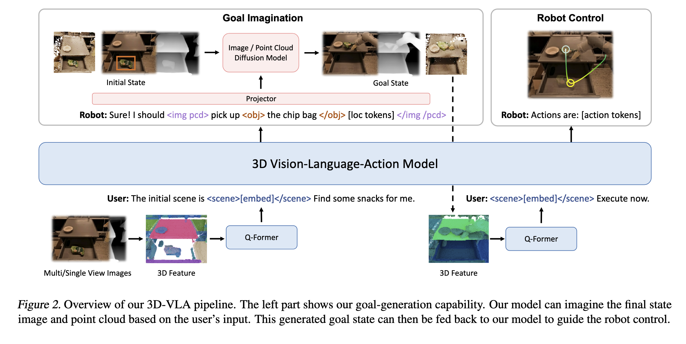

3D-VLA: A 3D Vision-Language-Action Generative World Model
How to Integrate 3D Perception and Enable Robots to Understand 3D Scenes
This work focuses on integrating 3D perception into robotic systems to enhance their understanding of 3D environments.
Main Contributions
- Previous Vision-Language-Action (VLA) models primarily relied on 2D image input and performed inference in 2D space. This work introduces 3D information.
- Prior VLA models typically mapped directly from visual states to actions. This work introduces target-based 3D scene prediction, effectively acting as a world model.
- A series of special interaction and action tokens are introduced into the Large Language Model (LLM) framework.
- 3D datasets are constructed from existing datasets using depth estimation.
Dataset
The research utilizes a variety of datasets:
- 12 datasets from the Open-X Embodiment Dataset.
- Dobb-E, which includes depth information.
- RH20T, which also includes depth information.
- Datasets from two simulator environments: RLBench (James et al., 2020) and CALVIN (Mees et al., 2022).
- Epic-Kitchens.
- HOI4D.
Generating Depth Information
- ZoeDepth is used for depth estimation.
- For video segments where the camera pose remains constant, optical flow is used to estimate unmoving background pixels. These background depth maps are then aligned to ensure depth consistency.
Based on the depth information, point clouds and 3D bounding boxes for objects are generated.
ChatGPT is used to diversify the instructions.
Method
Since 3D datasets are much less abundant than 2D datasets, the system uses a Blip2 model as its backbone. It generates 3D features from images taken from different viewpoints, rather than directly processing point clouds.
<loc0-255> tokens are used to represent locations in 3D space. There are 256 such tokens, each representing a discrete position. Six of these tokens are needed to represent a 3D bounding box.<scene></scene> tags enclose the embeddings of a static scene.- The robot’s actions, with 7 degrees of freedom, are represented by discrete tokens such as
<aloc0-255>, <arot0-255>, and <gripper0/1> to denote the arm’s intended absolute location, rotation, and gripper openness. These actions are separated by the <ACT SEP> token.
An additional diffusion model is used to generate goal state 3D information:
- SD 1.4 is used for RGBD to RGBD prediction. This means the input is an initial frame and depth map, and the output is the goal state’s RGBD.
- Point-E is used for point cloud to point cloud prediction.
- The VLA backbone outputs
<image>description</image> tokens, and the description within these tags serves as the condition for the diffusion model. To align the VLA’s internal state and the diffusion models, a Transformer-based projector maps the VLA output embeddings to the diffusion model’s conditioning space.
- A similar method is used when generating point clouds, where the description is placed within
<pcd>description</pcd> tags.

Finetuning and Alignment of Diffusion Models
- First, each diffusion model is finetuned independently. Given an initial state and task description, the diffusion model predicts the goal state.
- Then, LoRA is used to finetune the diffusion models, and a Transformer-based projector is trained to align the VLA output with the diffusion model’s condition.
Experiments
The system’s spatial reasoning performance is compared against other VLM or 3D LLM models.
- For example, it is tested by asking what would happen if certain specified actions were performed.
- The results show significantly better performance than other baselines, such as Blip2 and 3D-LLM.
The ability of the 3D-VLA to generate RGB target images and point cloud targets is evaluated.
- Baselines include:
- Instruct-P2P, an image editing model.
- SuSIE, a method for robots that generates subgoal images.
- NeXT-GPT, an LLM with image generation capabilities.
- The 3D-VLA even outperforms Instruct-P2P, highlighting the benefits of finetuning for robotic tasks.
- The 3D-VLA can generate RGB-D target images that are highly consistent with real targets in terms of visual appearance and semantic content. It demonstrates robustness in unseen environments and daily life, maintaining the background while accurately modifying the state of the target object.
The system demonstrates generalization capabilities on two benchmarks: RLBench and CALVIN.
reference
-
3d-llm: Injecting the 3d world into large language models
-
Ll3da: Visual interactive instruction tuning for omni-3d understanding, reasoning, and planning
-
Uni3d: Exploring unified 3d representation at scale
-
Gpt4point: A unified framework for point-language understanding and generation
-
Zero-shot robotic manipulation with pretrained image-editing diffusion models